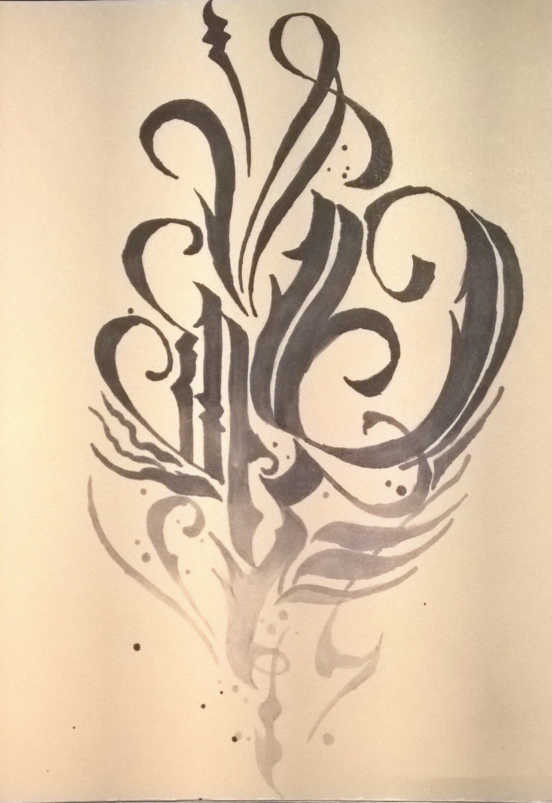

Calligraphy The Art of Lettering
Calligraphy ink is used in the art and style of calligraphy, a medium focused on the smooth and fluid movement of strokes within a word or design. There are several tools and ink types within this category. Dip‑pen ink is typically used with metal nibs, which form the tip of the pen. Brush pens, on the other hand, have flexible tips that allow for distinct thick or thin lines depending on how much pressure is applied. The inks themselves vary as well. India ink is a waterproof, deep black ink with strong opacity. Acrylic calligraphy ink is more opaque and vibrant in color, while fountain pen ink is designed for everyday use and flows smoothly, making it great for both calligraphy and modern pen styles. I tend to stick with fountain pen ink because it has multiple uses in daily life and can be used similarly to watercolor paints. I think starting with fountain pen ink is an easy and fun way to express yourself while possibly improving your handwriting. That was one of the original reasons I started — to fix my messy handwriting — and I’ve been practicing ever since. My favorite place to get ink right now is Ferris Wheel Press, a company that specializes in a wide range of colors and ink types for everyday writing and artistic use. I do have to warn that calligraphy can be a very messy medium when switching ink colors or experimenting, so as long as you use the right paper to avoid bleeding and keep cleanup supplies nearby, you’re all set.
Stroke Practice
Basic strokes:
- Upstroke
- Downstroke
- Oval
- Loop
